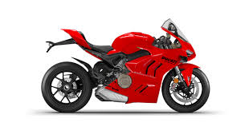
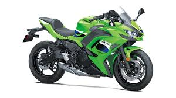
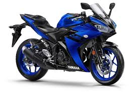
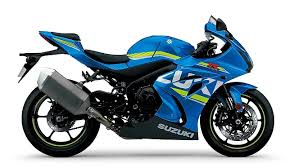
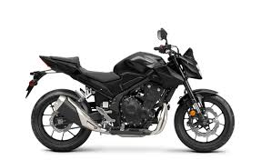

Ducati
A month after the official liberation of Italy in 1944, SIATA announced its intention to sell this engine, called the "Cucciolo" (Italian for "puppy," in reference to the distinctive exhaust sound) to the public.The first Cucciolos were available alone, to be mounted on standard bicycles, by the buyer; however, businessmen soon bought the little engines in quantity, and offered complete motorized-bicycle units for sale.In 1950, after more than 200,000 Cucciolos had been sold, in collaboration with SIATA, the Ducati firm offered its own Cucciolo-based motorcycle.This first Ducati motorcycle was a 48 cc bike weighing 98 lb (44 kg), with a top speed of 40 mph (64 km/h), and had a 15 mm carburetor (0.59 in) giving just under 200 mpg‑US (1.2 L/100 km; 240 mpg‑imp).Ducati soondropped the Cucciolo name in favor of "55M" and "65TL"Ducati 175 Cruiser, 1952Ducati Brio 100, 1968[3]Ducati Mach 1When the market moved toward larger motorcycles, Ducati management decided to respond, making an impression at an early-1952 Milan show, introducing their 65TS cycle and Cruiser (a four-stroke motor scooter).Despite being described as the most interesting new machine at the 1952 show, the Cruiser was not a great success, and only a few thousand were made over a two-year period before the model ceased production.In the 1960s, Ducati earned its place in motorcycling history by producing the fastest 250 cc road bike then available, the Mach 1.[4][5][6]In the 1960s and 1970s, Ducati produced a wide range of small two-strokebikes, mainly sub-100 cc capacities.
learn moreKawasaki
Kawasaki's Aircraft Company began the development of a motorcycle engine in 1949. The development was completed in 1952 and mass production started in 1953.[10] The engine was an air-cooled, 148 cc, OHV, four-stroke single cylinder with a maximum power of 4 PS (2.9 kW; 3.9 hp) at 4,000 rpm. In 1954, the first complete Kawasaki Motorcycle was produced under the name of Meihatsu, a subsidiary of Kawasaki Aircraft. In 1960, Kawasaki completed construction of a factory dedicated exclusively to motorcycle production and bought Meguro Motorcycles.
learn moreYamaha
In motorcycle racing Yamaha has won 39 world championships, including seven in MotoGP and 10 in the preceding 500 cc two-stroke class, and two in World Superbike. In addition Yamaha have recorded 210 victories at the Isle of Man TT[19] and head the list of victories at the Sidecar TT with 40.[19] Past Yamaha riders include: Jarno Saarinen, Giacomo Agostini, Bob Hannah, Heikki Mikkola, Bruce Anstey, Kenny Roberts, Eddie Lawson, Wayne Rainey, Jeremy McGrath, Stefan Merriman, Dave Molyneux, Ian Hutchinson, Phil Read, Chad Reed, Ben Spies, Jorge Lorenzo, and nine-time world champion Valentino Rossi.
learn moreSuzuki
Suzuki Motorcycle India, Private Limited (SMIL) is the wholly owned Indian subsidiary of Suzuki, Japan. The company has a manufacturing plant at Gurgaon, Haryana having the annual capacity of 5,40,000 units.[224]On October 30, 2024, Suzuki Motor's Indian unit supplied its first electric vehicle to Toyota Motor, with production starting in spring 2025 at Suzuki's plant in Gujarat, India.[225]
learn moreHonda
Honda is the largest motorcycle manufacturer in Japan and has been since it started production in 1955.[12] At its peak in 1982, Honda manufactured almost three million motorcycles annually. By 2006, this figure had been reduced to around 550,000 but was still higher than its three domestic competitors.[12] In 2017, India became the largest motorcycle market for Honda.[63][64] In India, Honda is leading in the scooters segment, with 59% market share.[65]During the 1960s when it was a small manufacturer, Honda broke out of the Japanese motorcycle market and began exporting to the United States. Working with the advertising agency Grey Advertising, Honda created an innovative marketing campaign, using the slogan "You meet the nicest people on a Honda." In contrast to the prevailing negative stereotypes of motorcyclists in America as tough, antisocial rebels, this campaign suggested that Honda motorcycles were made for the everyman. The campaign was hugely successful; the ads ran for three years, and by the end of 1963 alone, Honda had sold 90,000 motorcycles.
learn more